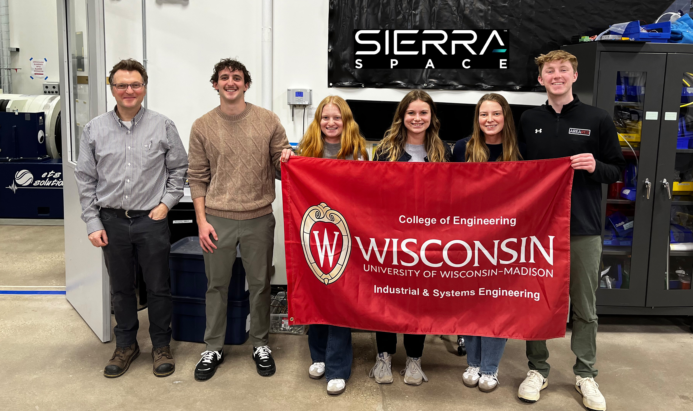
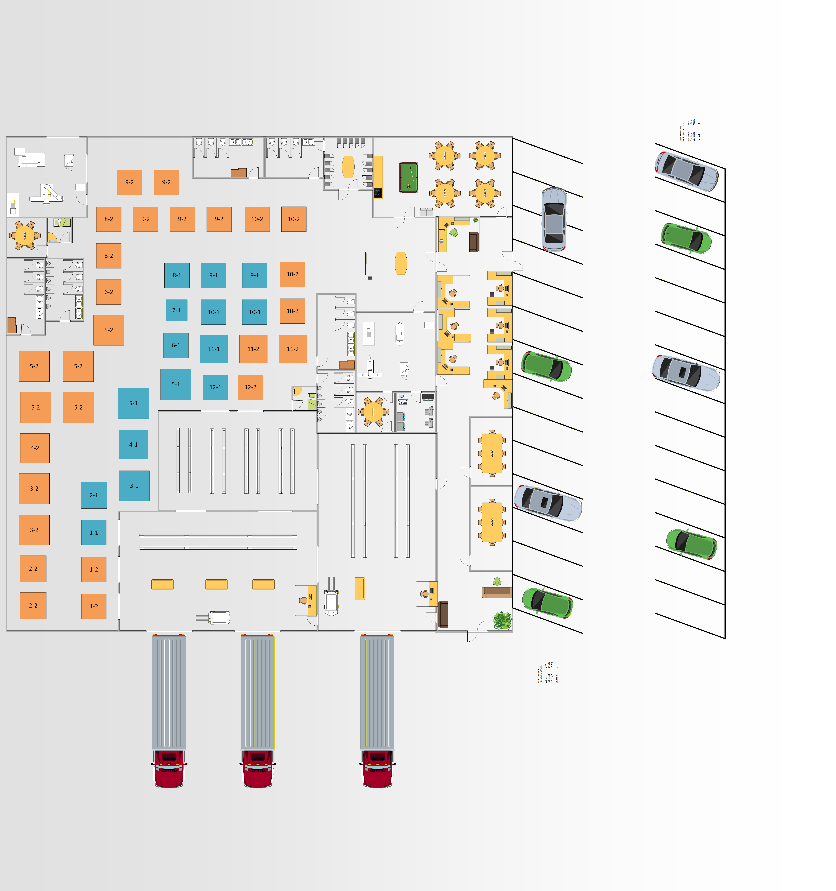
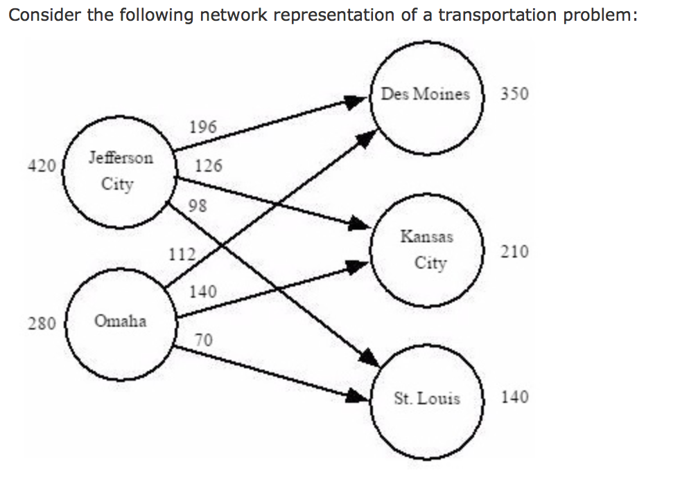
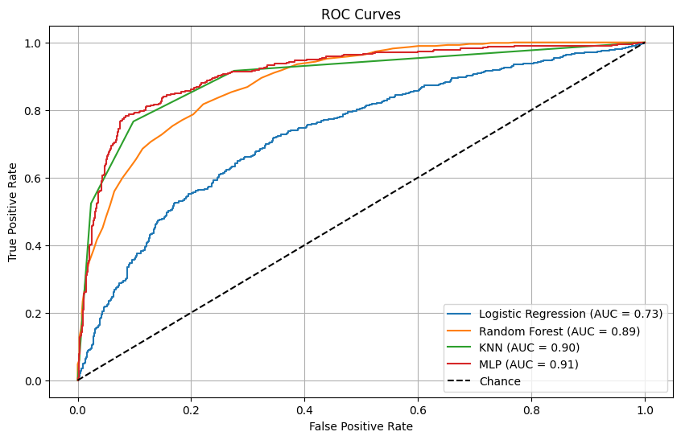
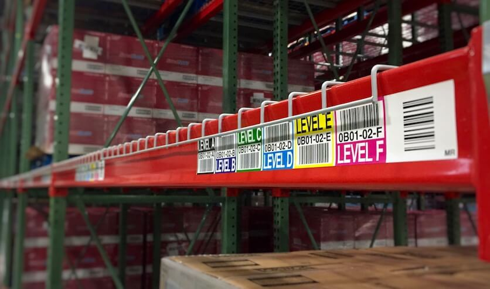
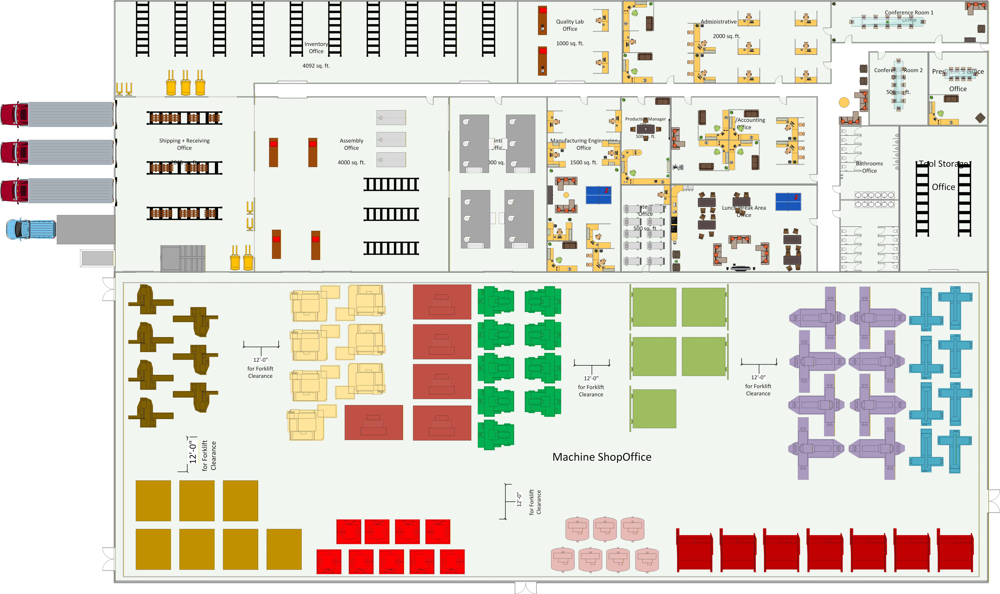

Projects
Sierra Space Flow Meter OOT Reductions
ISYE 450-

EMG Controlled Interface Design
ISYE 552- My team and I spent the semester developing design reccomendations for an armband phone holder which can interact with the phone through EMG signals. Our device would read a specific gesture performed by the individual, process it through a machine learning model to clearly distnguish the gesture, and perform the specified task via Bluetooth on the phone. We targeted runners and weighlifters in our design, who often like to pause, skip and rewind tracks, among other features, while they exercise. My role in the project was primary researcher, as I designed and conducted our EMG studies, completed the bioinstrumentation of participants, and cleaned the data to be filtered through our neural network. This project required extensive citations of existing literature and data gathered ourselves, through various surveys and the EMG studies, to inform our final design. A link will be provided upon completion.
Optimal Location Planning for Madison, WI Firehouses
ISYE 524- My partner and I created an extensive linear program (over x variables) to determine 14 optimal locations for the Madison, Wisconsin fire department to place their stations. The model considered incident volume, traffic patterns, structure sizes and hazard levels, and locations of other stations and sought to minimize response time across the city. The final report will be linked upon completion.
Neural Data Visualization Platform for EEG Research
ISYE 649- My team and I worked to create an interactive dashboard for researchers to viualize and explore their EEG data. Our final product, linked here, was created as a Shiny app through R Studio, and features numerous data visualization techniques we had learned. I led development of the interactive features of the platform. It allows for the input of one's own EEG data, cap arrangement, or brain model with very simple adjustments within the code. This dashboard is currently in use by the Neuroergonomics Lab at UW-Madison for easy visibility to their EEG results.

LCD Manufacturer Facility Redesign
ISYE 510- Given minimal information about a series of LCD screen products and their manufacturing process, my team and I were tasked with designing a new facility and operational plan to best suit the company. I led cell formation, nodal diagramming, systematic layout planning, and use of the CRAFT methodin our process of designing a full facility and headquarters for the company, which would increase efficency and profits by over 4 million dollars through flow increases and transportation efficiecny annually over three years.

The W Project
University of Wisconsin- I had the pleasure of being invited to speak to the University of Wisconsin-Madison class of 2029 at Camp Randall during their welcome week. I spoke alongside the Dean of Students and the Chancellor to the crowd of over 9,600 about taking advantage of their first few weeks at school and doing their best to be active, contributing members on campus.
.JPG)
Passenger Rail Delay Reduction Through Network Modeling
INTEREGR 397- In this project, I worked individually to highlight the lackluster nature of American passenger rail systems. I was motivated by a heavily delayed experience that left me wondering why our standards and systems are so different from other nations. Through this project, I advocated for and eventually designed a network model that maximized train flow through a series of constricted nodes and arcs designed to represent real life train traffic across passenger and freight railways. The project featured numerous oral presentations to engineers aross many disciplines who all provided feedback as it related to their own field, further strengthening the case for implementation of a similar system by railways nationwide.

Measuring Trust Through Neural Activation
Neuroergonomics Lab- See experience tab for more information! I worked with an extremely talented team focused on human-robot interaction , a growing field in both industry and academia. My work was specifically focused on bioinsturmentation and quantification of education level /prior knowledge and it's influence on the participants reactions. Subjective and objective measures were used to get extremely comprehensive understandings of over 40 study participants we worked with.
.png)
Plant Disease Classification
Math 443- Combining my knowledge of turf disease and my groupmates knowledge of K-nearest neighbor machine learning, we teamed up to write a statistically reliable program which was capable of both image compression as well as classification. The code can be found here. Our model achieved 90% accuracy in it's prediction capabilities based only on photos of a leaf.

Color Vision Deficiency in Warehousing Research Design
ISYE 349- This work focused on color-based warehousing practices and their limitations, both generally and especially for the colorblind population. Working in the lab with a heavily colorblind subject, I first tested various colors for sorting and identification of components, before switching to other methods, such as shape, location, text, and identification number based sorts.

Metals Shop Facility Redesign
ISYE 315- This project took data from a local metal shaping shop as they looked to expand, particularly their welding operations. My team and I worked through a series of communications with the company as we dug for more data and context to make reccomendations for their expansion redesign. This project focused on incremental project management strategies as well as the end product facility.
